Charlie Watts: a life in pictures
A look back at the life of the Rolling Stones drummer, who has died at the age of 80
Pejman Faratin
Main image:
Charlie Watts aged 2 with his mother, Lillian, and father, Charles, in Piccadilly Circus in 1943.
Photograph: Linda Roots/Getty Images
-
Brian Jones, Bill Wyman, Charlie Watts, Keith Richards and Mick Jagger in June 1964
Photograph: Allstar
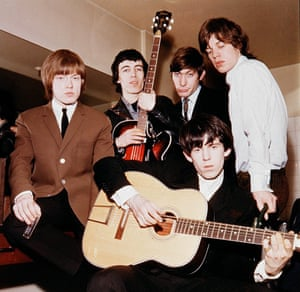 -
The Rolling Stones pose wearing matching houndstooth check jackets and dark grey trousers circa 1963. (L-R): Charlie Watts, Bill Wyman, Mick Jagger, Brian Jones and Keith Richards
Photograph: Mark and Colleen Hayward/Redferns
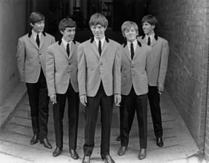 -
The Rolling Stones, seen with their 1971 album, Sticky Fingers
Photograph: Granger/Rex/Shutterstock
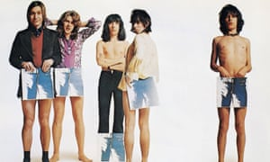 -
-
Watts and his wife, Shirley, attend the Pride of Poland Arabian Horse sale in Janów Podlaski on 12 August 2012. Shirley Watts bought mare Etnologia for €370,000
Photograph: Janek Skarżyński/AFP/Getty Images
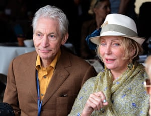 -
The Rolling Stones eat lunch at the Savoy Hotel in London, on 12 September 1964
Photograph: AP
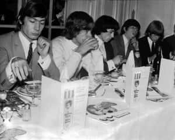 -
-
Charlie Watts, Keith Richards, Brian Jones, Bill Wyman and Mick Jagger in 1964
Photograph: PA
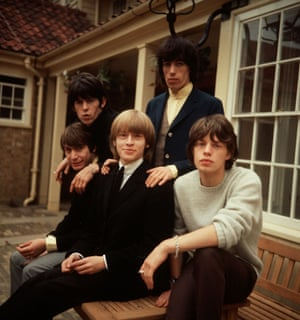 -
Ronnie Scott’s Club in Birmingham. Watts is seen with Ronnie Scott, Alan Sartori and Barry Sherwin
Photograph: David Redfern/Redferns
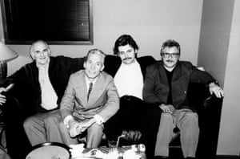 -
The Rolling Stones appear on Ready, Steady, Go
Photograph: Rex/Dezo Hoffmann
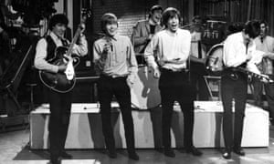 -
-
Watts is seen at Park Aveny Hotel in Gothenburg on 30 March 1965
Photograph: Björn Larsson Ask/IBL/Rex/Shutterstock
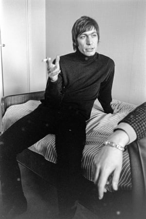 -
Watts with his wife, Shirley, and daughter, Seraphina
Photograph: Alan Davidson/Rex/Shutterstock
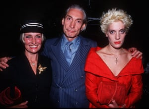 -
Jerry Hall, Keith Richards, Ronnie Wood, Mick Jagger and Charlie Watts attend the wedding reception of Bill Wyman and Mandy Smith at the Grosvenor House Hotel
Photograph: Alan Davidson/Rex/Shutterstock
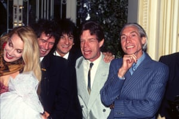 -
-
Mick Jagger, Keith Richards, Charlie Watts and Ronnie Wood at the 100 Club in London on 24 Feb 1986
Photograph: Alan Davidson/Rex/Shutterstock
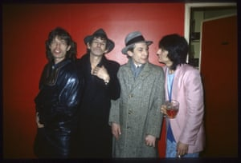 -
Watts on Ready, Steady, Go in 1963
Photograph: Dezo Hoffman/Rex/Shutterstock
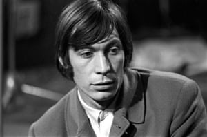 -
-
Watts at his daughter Seraphina’s wedding
Photograph: Ernie Mccreight/Rex/Shutterstock
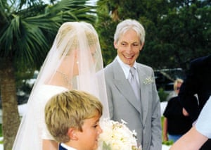 -
Jagger and Watts on stage for the movie Let’s Spend the Night Together in 1981
Photograph: Aaron Rapoport/Corbis/Getty Images
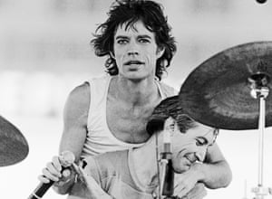 -
Watts stands between Sly Dunbar and Robbie Shakespeare of the reggae band Black Uhuru
Photograph: Lynn Goldsmith/Corbis/VCG/Getty Images
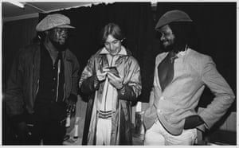 -
The Rolling Stones rehearse at the Saville Theatre, London, left to right, Mick Taylor, Mick Jagger, Keith Richards and Charlie Watts (behind)
Photograph: PA
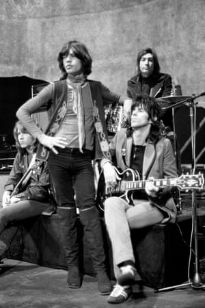 -
-
A stylish Charles Robert Watts aged 2 with his mother, Lillian, and father, Charles, in Piccadilly Circus in 1943. Charlie was known as Charlie Boy, while his dad was called Charlie
Photograph: Linda Roots/Getty Images
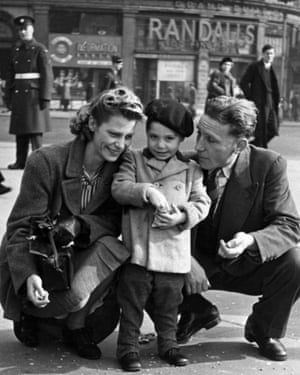